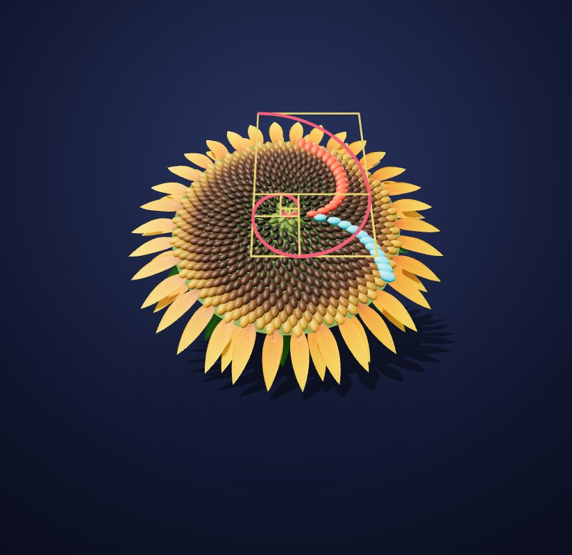
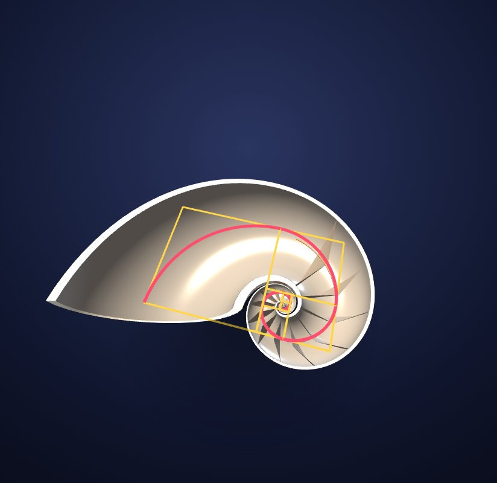

Нажми на картинку → наведи камеру на стол (на iPhone — вкладка «AR»), подожди секунду и модель встанет на столешницу. Модель привязывается к столу и стоит на месте: обойди её кругом и посмотри со всех сторон, поднеси ближе. Один палец двигает, два пальца вращают и увеличивают. Вкладка «Объект» вверху даёт покрутить модель без камеры.

🌻 Показать на столе
🐚 Показать на столе